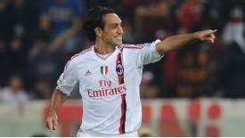

Veteran AC Milan defender Alessandro Nesta insists he currently has no plans to retire from football at the end of the season.

Nesta's contract at Milan is due to expire in the summer and speculation has suggested this could be the 35-year-old's final campaign as a professional footballer. But the former Italy international, who has started half of Milan's Serie A matches this season, is determined to play on despite concerns over injury problems he has endured in recent years.
"I have no intention of quitting just yet," he told Gazzetta dello Sport on Wednesday. "I don't have that desire." Nesta played a part in helping Milan claim Scudetto glory last term, and the centre-back is determined to propel the club to further success, with the Rossoneri currently level on points at the Serie A summit with Juventus. "I'm convinced that Milan will win something important again this season," Nesta said. "We are the favourites to win the Scudetto and we would be favourites in the Champions League too if Barcelona weren't in it... "We have Zlatan Ibrahimovic who, like Lionel Messi, is an extraordinary player and one who can draw three opponents away on the field of play."